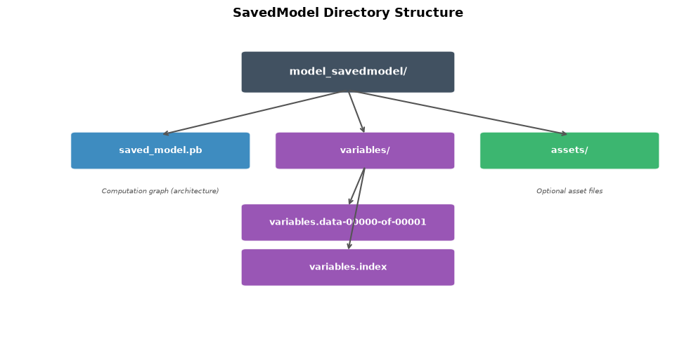
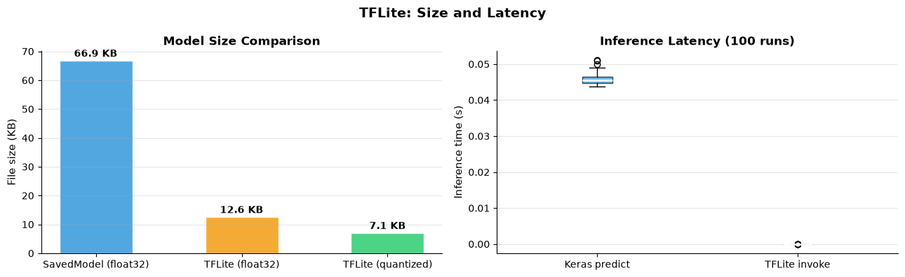
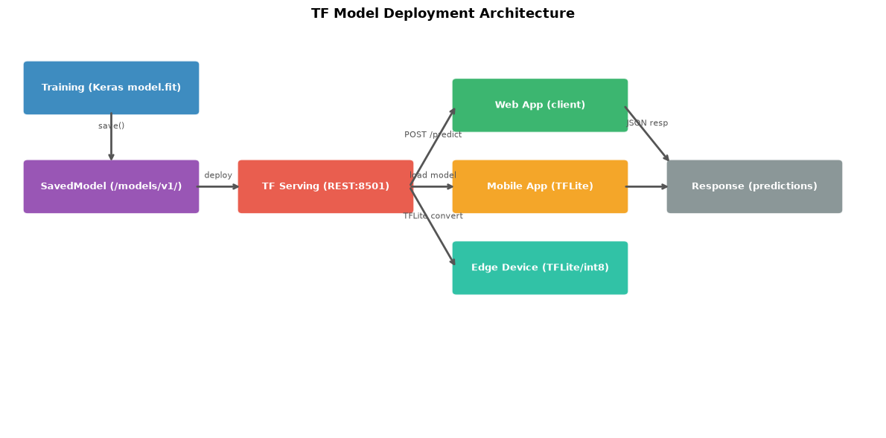

How do you save and deploy models?#
Topics: SavedModel Format · model.save() · load_model() · TFLite Conversion · TF Serving Basics
1. Saving Models#
Two formats#
Format |
Extension |
Use |
|---|---|---|
SavedModel |
directory or |
Production, TF Serving, recommended |
HDF5 |
|
Legacy, single file |
What gets saved#
Model architecture
Weights and biases
Optimizer state (for resuming training)
Training configuration (from
compile())
Key intuition#
SavedModel is a directory containing the computation graph and weights
.kerasformat (new in TF 2.12+) is the recommended modern formatHDF5 is a single binary file — easier to move around but less flexible
Gotchas#
Subclassed models need
save_traces=Truein SavedModel formatsave_weights_only=Truein ModelCheckpoint saves faster but needs architecture to loadAlways test loading before deploying — verify outputs match
import tensorflow as tf
import numpy as np
import matplotlib.pyplot as plt
import os
np.random.seed(42); tf.random.set_seed(42)
X = np.random.randn(200, 8).astype(np.float32)
y = (X[:, 0] + X[:, 1] > 0).astype(np.int32)
model = tf.keras.Sequential([
tf.keras.layers.Dense(32, activation='relu', input_shape=(8,)),
tf.keras.layers.Dense(16, activation='relu'),
tf.keras.layers.Dense(1, activation='sigmoid'),
])
model.compile(optimizer='adam', loss='binary_crossentropy', metrics=['accuracy'])
model.fit(X[:160], y[:160], epochs=10, verbose=0)
# --- Save in different formats (Keras 3 / TF 2.16+) ---
# model.save() only supports .keras and .h5 in Keras 3
model.save('/tmp/model.keras') # Recommended native Keras format
model.save('/tmp/model.h5') # Legacy HDF5 format
# For SavedModel/TFLite/TFServing: use model.export() instead
model.export('/tmp/model_savedmodel') # Exports TF SavedModel for serving
print("Saved files:")
for path in ['/tmp/model.keras', '/tmp/model.h5', '/tmp/model_savedmodel']:
if os.path.isdir(path):
size = sum(os.path.getsize(os.path.join(r,f)) for r,d,files in os.walk(path) for f in files)
print(f" {path} (dir) : {size/1024:.1f} KB")
elif os.path.exists(path):
print(f" {path}: {os.path.getsize(path)/1024:.1f} KB")
# --- Loading ---
model_k = tf.keras.models.load_model('/tmp/model.keras')
model_h5 = tf.keras.models.load_model('/tmp/model.h5')
X_test = X[160:]
out_orig = model.predict(X_test, verbose=0)
out_k = model_k.predict(X_test, verbose=0)
print(f"Outputs match (.keras): {np.allclose(out_orig, out_k, atol=1e-5)}")
# Visualize SavedModel directory structure
fig, ax = plt.subplots(figsize=(10, 5))
ax.set_xlim(0, 10); ax.set_ylim(0, 7); ax.axis('off')
ax.set_title('SavedModel Directory Structure', fontsize=13, fontweight='bold')
import matplotlib.patches as mpatches
def box(ax, x, y, w, h, label, color, fontsize=9):
rect = mpatches.FancyBboxPatch((x, y), w, h,
boxstyle='round,pad=0.07', facecolor=color, edgecolor='white', linewidth=1.5, alpha=0.9)
ax.add_patch(rect)
ax.text(x+w/2, y+h/2, label, ha='center', va='center',
fontsize=fontsize, fontweight='bold', color='white')
box(ax, 3.5, 5.5, 3, 0.8, 'model_savedmodel/', '#2C3E50', 11)
box(ax, 1.0, 3.8, 2.5, 0.7, 'saved_model.pb', '#2980B9')
box(ax, 4.0, 3.8, 2.5, 0.7, 'variables/', '#8E44AD')
box(ax, 7.0, 3.8, 2.5, 0.7, 'assets/', '#27AE60')
box(ax, 3.5, 2.2, 3.0, 0.7, 'variables.data-00000-of-00001', '#8E44AD')
box(ax, 3.5, 1.2, 3.0, 0.7, 'variables.index', '#8E44AD')
for src_xy, dst_xy in [((5.0,5.5),(2.25,4.5)), ((5.0,5.5),(5.25,4.5)), ((5.0,5.5),(8.25,4.5))]:
ax.annotate('', xy=(dst_xy[0], dst_xy[1]), xytext=(src_xy[0], src_xy[1]-0.0),
arrowprops=dict(arrowstyle='->', color='#555', lw=1.5))
for src_xy, dst_xy in [((5.25,3.8),(5.0,2.9)), ((5.25,3.8),(5.0,1.9))]:
ax.annotate('', xy=(dst_xy[0], dst_xy[1]), xytext=(src_xy[0], src_xy[1]),
arrowprops=dict(arrowstyle='->', color='#555', lw=1.5))
labels = [('2.3, 4.0', 'Computation graph (architecture)'),
('7.0, 4.0', 'Optional asset files'),
('1.2, 3.5', 'Weights (binary)'),
('1.2, 2.5', 'Weight index')]
for pos, note in [((2.25, 3.2), 'Computation graph (architecture)'),
((8.25, 3.2), 'Optional asset files')]:
ax.text(pos[0], pos[1], note, ha='center', fontsize=7.5, color='#555', style='italic')
plt.tight_layout()
plt.savefig('savedmodel_structure.png', dpi=120, bbox_inches='tight')
plt.show()
WARNING: All log messages before absl::InitializeLog() is called are written to STDERR
I0000 00:00:1786568660.749642 21145 cpu_feature_guard.cc:227] This TensorFlow binary is optimized to use available CPU instructions in performance-critical operations.
To enable the following instructions: AVX2 FMA, in other operations, rebuild TensorFlow with the appropriate compiler flags.
/opt/hostedtoolcache/Python/3.11.15/x64/lib/python3.11/site-packages/keras/src/layers/core/dense.py:107: UserWarning: Do not pass an `input_shape`/`input_dim` argument to a layer. When using Sequential models, prefer using an `Input(shape)` object as the first layer in the model instead.
super().__init__(activity_regularizer=activity_regularizer, **kwargs)
WARNING:absl:You are saving your model as an HDF5 file via `model.save()` or `keras.saving.save_model(model)`. This file format is considered legacy. We recommend using instead the native Keras format, e.g. `model.save('my_model.keras')` or `keras.saving.save_model(model, 'my_model.keras')`.
INFO:tensorflow:Assets written to: /tmp/model_savedmodel/assets
INFO:tensorflow:Assets written to: /tmp/model_savedmodel/assets
Saved artifact at '/tmp/model_savedmodel'. The following endpoints are available:
* Endpoint 'serve'
args_0 (POSITIONAL_ONLY): TensorSpec(shape=(None, 8), dtype=tf.float32, name='keras_tensor')
Output Type:
TensorSpec(shape=(None, 1), dtype=tf.float32, name=None)
Captures:
140019340024656: TensorSpec(shape=(), dtype=tf.resource, name=None)
140019340025808: TensorSpec(shape=(), dtype=tf.resource, name=None)
140019340024464: TensorSpec(shape=(), dtype=tf.resource, name=None)
140019340023120: TensorSpec(shape=(), dtype=tf.resource, name=None)
140019340023696: TensorSpec(shape=(), dtype=tf.resource, name=None)
140019340023312: TensorSpec(shape=(), dtype=tf.resource, name=None)
WARNING:absl:Compiled the loaded model, but the compiled metrics have yet to be built. `model.compile_metrics` will be empty until you train or evaluate the model.
Saved files:
/tmp/model.keras: 34.8 KB
/tmp/model.h5: 40.0 KB
/tmp/model_savedmodel (dir) : 51.7 KB
Outputs match (.keras): True

2. TFLite Conversion#
What it is#
TensorFlow Lite — lightweight format for mobile and edge deployment
Converts SavedModel to a single
.tflitefileSupports quantization — reduces model size and speeds up inference
Quantization types#
Type |
Size reduction |
Accuracy loss |
Use case |
|---|---|---|---|
None (float32) |
1x |
None |
Server inference |
Dynamic range |
~4x |
Minimal |
Mobile, default choice |
Float16 |
~2x |
Minimal |
GPU mobile |
Integer (int8) |
~4x |
Small |
Microcontrollers, edge |
Key intuition#
Quantization replaces float32 weights with int8 — 4x smaller, faster on hardware
Dynamic range quantization — no calibration data needed — easiest to apply
Full int8 quantization — needs representative dataset — most aggressive
Gotchas#
TFLite does not support all TF ops — check op compatibility before converting
Quantization can hurt accuracy for small models — always benchmark
TFLite interpreter API is different from Keras model API
import tensorflow as tf
import numpy as np
import matplotlib.pyplot as plt
import os
np.random.seed(42)
X = np.random.randn(200, 8).astype(np.float32)
y = (X[:, 0] + X[:, 1] > 0).astype(np.int32)
model = tf.keras.Sequential([
tf.keras.layers.Dense(64, activation='relu', input_shape=(8,)),
tf.keras.layers.Dense(32, activation='relu'),
tf.keras.layers.Dense(1, activation='sigmoid'),
])
model.compile(optimizer='adam', loss='binary_crossentropy')
model.fit(X[:160], y[:160], epochs=10, verbose=0)
model.export('/tmp/model_for_tflite') # Use export() for SavedModel in Keras 3
# Convert to TFLite (no quantization)
converter = tf.lite.TFLiteConverter.from_saved_model('/tmp/model_for_tflite')
tflite_model = converter.convert()
with open('/tmp/model.tflite', 'wb') as f:
f.write(tflite_model)
# Convert with dynamic range quantization
converter_q = tf.lite.TFLiteConverter.from_saved_model('/tmp/model_for_tflite')
converter_q.optimizations = [tf.lite.Optimize.DEFAULT]
tflite_quant = converter_q.convert()
with open('/tmp/model_quant.tflite', 'wb') as f:
f.write(tflite_quant)
orig_size = sum(os.path.getsize(os.path.join(r,f))
for r,d,files in os.walk('/tmp/model_for_tflite') for f in files) / 1024
lite_size = os.path.getsize('/tmp/model.tflite') / 1024
quant_size = os.path.getsize('/tmp/model_quant.tflite') / 1024
print(f"SavedModel size : {orig_size:.1f} KB")
print(f"TFLite size : {lite_size:.1f} KB")
print(f"TFLite quant size : {quant_size:.1f} KB")
# TFLite inference
interpreter = tf.lite.Interpreter(model_path='/tmp/model.tflite')
interpreter.allocate_tensors()
inp_details = interpreter.get_input_details()
out_details = interpreter.get_output_details()
print(f"Input shape: {inp_details[0]['shape']}")
print(f"Output shape: {out_details[0]['shape']}")
x_test = X[160:161]
interpreter.set_tensor(inp_details[0]['index'], x_test)
interpreter.invoke()
tflite_out = interpreter.get_tensor(out_details[0]['index'])
keras_out = model.predict(x_test, verbose=0)
print(f"Keras output : {keras_out[0][0]:.4f}")
print(f"TFLite output: {tflite_out[0][0]:.4f}")
# Size and latency comparison
fig, axes = plt.subplots(1, 2, figsize=(13, 4))
formats = ['SavedModel (float32)', 'TFLite (float32)', 'TFLite (quantized)']
sizes = [orig_size, lite_size, quant_size]
colors = ['#3498DB', '#F39C12', '#2ECC71']
bars = axes[0].bar(formats, sizes, color=colors, alpha=0.85, edgecolor='white', width=0.5)
axes[0].set_ylabel('File size (KB)', fontsize=11)
axes[0].set_title('Model Size Comparison', fontsize=12, fontweight='bold')
axes[0].grid(True, alpha=0.3, axis='y')
axes[0].spines['top'].set_visible(False); axes[0].spines['right'].set_visible(False)
for bar, val in zip(bars, sizes):
axes[0].text(bar.get_x()+bar.get_width()/2, bar.get_height()+0.5,
f'{val:.1f} KB', ha='center', va='bottom', fontsize=10, fontweight='bold')
import time
n_runs = 100
keras_times, tflite_times = [], []
for _ in range(n_runs):
t = time.time(); model.predict(X[160:161], verbose=0); keras_times.append(time.time()-t)
for _ in range(n_runs):
t = time.time()
interpreter.set_tensor(inp_details[0]['index'], X[160:161])
interpreter.invoke()
tflite_times.append(time.time()-t)
# matplotlib 3.9 renamed boxplot's `labels` argument to `tick_labels`.
axes[1].boxplot([keras_times, tflite_times], tick_labels=['Keras predict', 'TFLite invoke'],
patch_artist=True,
boxprops=dict(facecolor='#3498DB', alpha=0.7),
medianprops=dict(color='white', linewidth=2))
axes[1].set_ylabel('Inference time (s)', fontsize=11)
axes[1].set_title(f'Inference Latency ({n_runs} runs)', fontsize=12, fontweight='bold')
axes[1].grid(True, alpha=0.3, axis='y')
axes[1].spines['top'].set_visible(False); axes[1].spines['right'].set_visible(False)
plt.suptitle('TFLite: Size and Latency', fontsize=14, fontweight='bold')
plt.tight_layout()
plt.savefig('tflite_comparison.png', dpi=120, bbox_inches='tight')
plt.show()
/opt/hostedtoolcache/Python/3.11.15/x64/lib/python3.11/site-packages/keras/src/layers/core/dense.py:107: UserWarning: Do not pass an `input_shape`/`input_dim` argument to a layer. When using Sequential models, prefer using an `Input(shape)` object as the first layer in the model instead.
super().__init__(activity_regularizer=activity_regularizer, **kwargs)
INFO:tensorflow:Assets written to: /tmp/model_for_tflite/assets
INFO:tensorflow:Assets written to: /tmp/model_for_tflite/assets
Saved artifact at '/tmp/model_for_tflite'. The following endpoints are available:
* Endpoint 'serve'
args_0 (POSITIONAL_ONLY): TensorSpec(shape=(None, 8), dtype=tf.float32, name='keras_tensor_16')
Output Type:
TensorSpec(shape=(None, 1), dtype=tf.float32, name=None)
Captures:
140019290840464: TensorSpec(shape=(), dtype=tf.resource, name=None)
140019290841232: TensorSpec(shape=(), dtype=tf.resource, name=None)
140019290841040: TensorSpec(shape=(), dtype=tf.resource, name=None)
140019290835856: TensorSpec(shape=(), dtype=tf.resource, name=None)
140019290841808: TensorSpec(shape=(), dtype=tf.resource, name=None)
140019290841424: TensorSpec(shape=(), dtype=tf.resource, name=None)
W0000 00:00:1786568667.064056 21145 tf_tfl_flatbuffer_helpers.cc:364] Ignored output_format.
W0000 00:00:1786568667.064085 21145 tf_tfl_flatbuffer_helpers.cc:367] Ignored drop_control_dependency.
I0000 00:00:1786568667.064482 21145 reader.cc:83] Reading SavedModel from: /tmp/model_for_tflite
I0000 00:00:1786568667.064858 21145 reader.cc:52] Reading meta graph with tags { serve }
I0000 00:00:1786568667.064864 21145 reader.cc:147] Reading SavedModel debug info (if present) from: /tmp/model_for_tflite
I0000 00:00:1786568667.067547 21145 mlir_graph_optimization_pass.cc:437] MLIR V1 optimization pass is not enabled
I0000 00:00:1786568667.068185 21145 loader.cc:236] Restoring SavedModel bundle.
I0000 00:00:1786568667.085643 21145 loader.cc:220] Running initialization op on SavedModel bundle at path: /tmp/model_for_tflite
I0000 00:00:1786568667.091582 21145 loader.cc:471] SavedModel load for tags { serve }; Status: success: OK. Took 27107 microseconds.
I0000 00:00:1786568667.099590 21145 dump_mlir_util.cc:269] disabling MLIR crash reproducer, set env var `MLIR_CRASH_REPRODUCER_DIRECTORY` to enable.
SavedModel size : 66.9 KB
TFLite size : 12.6 KB
TFLite quant size : 7.1 KB
Input shape: [1 8]
Output shape: [1 1]
WARNING:tensorflow:5 out of the last 5 calls to <function TensorFlowTrainer.make_predict_function.<locals>.one_step_on_data_distributed at 0x7f58c8ad31a0> triggered tf.function retracing. Tracing is expensive and the excessive number of tracings could be due to (1) creating @tf.function repeatedly in a loop, (2) passing tensors with different shapes, (3) passing Python objects instead of tensors. For (1), please define your @tf.function outside of the loop. For (2), @tf.function has reduce_retracing=True option that can avoid unnecessary retracing. For (3), please refer to https://www.tensorflow.org/guide/function#controlling_retracing and https://www.tensorflow.org/api_docs/python/tf/function for more details.
W0000 00:00:1786568667.396403 21145 tf_tfl_flatbuffer_helpers.cc:364] Ignored output_format.
W0000 00:00:1786568667.396430 21145 tf_tfl_flatbuffer_helpers.cc:367] Ignored drop_control_dependency.
I0000 00:00:1786568667.396595 21145 reader.cc:83] Reading SavedModel from: /tmp/model_for_tflite
I0000 00:00:1786568667.397014 21145 reader.cc:52] Reading meta graph with tags { serve }
I0000 00:00:1786568667.397020 21145 reader.cc:147] Reading SavedModel debug info (if present) from: /tmp/model_for_tflite
I0000 00:00:1786568667.400047 21145 loader.cc:236] Restoring SavedModel bundle.
I0000 00:00:1786568667.417269 21145 loader.cc:220] Running initialization op on SavedModel bundle at path: /tmp/model_for_tflite
I0000 00:00:1786568667.423238 21145 loader.cc:471] SavedModel load for tags { serve }; Status: success: OK. Took 26654 microseconds.
/opt/hostedtoolcache/Python/3.11.15/x64/lib/python3.11/site-packages/tensorflow/lite/python/interpreter.py:457: UserWarning: Warning: tf.lite.Interpreter is deprecated and is scheduled for deletion in
TF 2.20. Please use the LiteRT interpreter from the ai_edge_litert package.
See the [migration guide](https://ai.google.dev/edge/litert/migration)
for details.
warnings.warn(_INTERPRETER_DELETION_WARNING)
INFO: Created TensorFlow Lite XNNPACK delegate for CPU.
WARNING:tensorflow:5 out of the last 5 calls to <function TensorFlowTrainer.make_predict_function.<locals>.one_step_on_data_distributed at 0x7f58c8ad31a0> triggered tf.function retracing. Tracing is expensive and the excessive number of tracings could be due to (1) creating @tf.function repeatedly in a loop, (2) passing tensors with different shapes, (3) passing Python objects instead of tensors. For (1), please define your @tf.function outside of the loop. For (2), @tf.function has reduce_retracing=True option that can avoid unnecessary retracing. For (3), please refer to https://www.tensorflow.org/guide/function#controlling_retracing and https://www.tensorflow.org/api_docs/python/tf/function for more details.
Keras output : 0.7561
TFLite output: 0.7561

3. TF Serving Basics#
What it is#
Production serving system for TensorFlow models
Exposes REST and gRPC endpoints for model inference
Supports versioning, A/B testing, model hot-swapping
Key intuition#
Save model in SavedModel format → TF Serving loads it automatically
Send POST requests to
http://localhost:8501/v1/models/model_name:predictScales horizontally — multiple servers can serve the same model
Interview Q&A#
What is the difference between TFLite and TF Serving?
TFLite → edge/mobile deployment (phones, microcontrollers, offline)
TF Serving → server-side production deployment with REST/gRPC API
How do you version models in TF Serving?
Save models in numbered subdirectories:
model/1/,model/2/TF Serving automatically serves the latest version
Specify version in URL:
/v1/models/model_name/versions/2:predict
Gotchas#
TF Serving requires SavedModel format — not
.h5or.tfliteInput must match model’s input signature exactly — shape and dtype
Batch size must be specified or use dynamic batch size (
-1)
import numpy as np
import matplotlib.pyplot as plt
import matplotlib.patches as mpatches
# TF Serving pattern reference
print("=== TF Serving Deployment Pattern ===")
print()
print("1. Save model:")
print(" model.save('/models/my_model/1/') # version 1")
print()
print("2. Start TF Serving (Docker):")
print(" docker run -p 8501:8501 -p 8500:8500 \\")
print(" -v /models/my_model:/models/my_model \\")
print(" -e MODEL_NAME=my_model \\")
print(" tensorflow/serving")
print()
print("3. Send REST request:")
print("")
print("import requests, json")
print("data = {'instances': X_test.tolist()}")
print("response = requests.post(")
print(" 'http://localhost:8501/v1/models/my_model:predict',")
print(" json=data")
print(")")
print("predictions = response.json()['predictions']")
print("")
print("4. Check model status:")
print(" GET http://localhost:8501/v1/models/my_model")
# Deployment architecture diagram
fig, ax = plt.subplots(figsize=(12, 6))
ax.set_xlim(0, 13); ax.set_ylim(0, 7); ax.axis('off')
ax.set_title('TF Model Deployment Architecture', fontsize=13, fontweight='bold')
def box(ax, x, y, w, h, label, color, fontsize=9):
rect = mpatches.FancyBboxPatch((x, y), w, h,
boxstyle='round,pad=0.07', facecolor=color, edgecolor='white', linewidth=1.5, alpha=0.9)
ax.add_patch(rect)
ax.text(x+w/2, y+h/2, label, ha='center', va='center',
fontsize=fontsize, fontweight='bold', color='white')
def arr(ax, x1, y1, x2, y2, label='', color='#555555'):
ax.annotate('', xy=(x2, y2), xytext=(x1, y1),
arrowprops=dict(arrowstyle='->', color=color, lw=2))
if label:
mx, my = (x1+x2)/2, (y1+y2)/2
ax.text(mx, my+0.15, label, ha='center', fontsize=8, color=color)
box(ax, 0.3, 5.5, 2.5, 0.8, 'Training (Keras model.fit)', '#2980B9')
box(ax, 0.3, 3.8, 2.5, 0.8, 'SavedModel (/models/v1/)', '#8E44AD')
box(ax, 3.5, 3.8, 2.5, 0.8, 'TF Serving (REST:8501)', '#E74C3C')
box(ax, 6.7, 5.2, 2.5, 0.8, 'Web App (client)', '#27AE60')
box(ax, 6.7, 3.8, 2.5, 0.8, 'Mobile App (TFLite)', '#F39C12')
box(ax, 6.7, 2.4, 2.5, 0.8, 'Edge Device (TFLite/int8)', '#1ABC9C')
box(ax, 9.9, 3.8, 2.5, 0.8, 'Response (predictions)', '#7F8C8D')
arr(ax, 1.55, 5.5, 1.55, 4.6, 'save()')
arr(ax, 2.8, 4.2, 3.5, 4.2, 'deploy')
arr(ax, 6.0, 4.2, 6.7, 5.6, 'POST /predict')
arr(ax, 6.0, 4.2, 6.7, 4.2, 'load model')
arr(ax, 6.0, 4.2, 6.7, 2.8, 'TFLite convert')
arr(ax, 9.2, 5.6, 9.9, 4.6, 'JSON resp')
arr(ax, 9.2, 4.2, 9.9, 4.2, '')
plt.tight_layout()
plt.savefig('tf_serving.png', dpi=120, bbox_inches='tight')
plt.show()
=== TF Serving Deployment Pattern ===
1. Save model:
model.save('/models/my_model/1/') # version 1
2. Start TF Serving (Docker):
docker run -p 8501:8501 -p 8500:8500 \
-v /models/my_model:/models/my_model \
-e MODEL_NAME=my_model \
tensorflow/serving
3. Send REST request:
import requests, json
data = {'instances': X_test.tolist()}
response = requests.post(
'http://localhost:8501/v1/models/my_model:predict',
json=data
)
predictions = response.json()['predictions']
4. Check model status:
GET http://localhost:8501/v1/models/my_model

Gotchas for all deployment#
Test the saved model outputs match training model outputs before deploying
Version your models — always keep previous version available for rollback
Monitor model performance in production — data drift can degrade accuracy over time
For REST API, input JSON format:
{'instances': [[x1, x2, ...], [x1, x2, ...]]}— list of lists